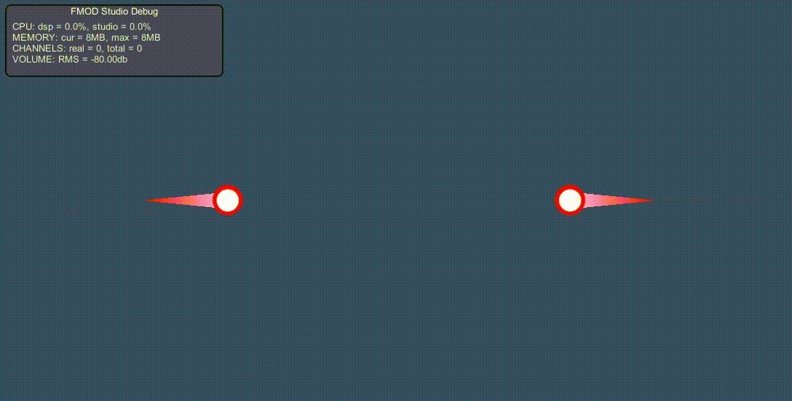

| Defined in BulletManager.cs |
|
public sealed class
BulletManager
:
MonoBehaviour
;
|
Class BulletManager 는 2D 탑뷰 슈팅 게임에서의 총알 관리를 위한 script component 입니다. BulletManager 의 인스턴스는 프로그램에서 단 하나만 존재할 수 있으며,
해당 인스턴스의 초기화는 Awake() 에서 이루어집니다. 다른 MonoBehaviour 객체에서 BulletManager 의 Method 또는 Property 들을 사용하고자 한다면,
Start() 이후 단계에서 사용하는 것이 안전합니다. GameObject 에 부착한 BulletManager script component 는 DontDestroyOnLoad(gameObject) 를
통해 프로그램이 종료될 때까지 파괴되지 않습니다. 만약, 해당 컴포넌트가 여러 GameObject 에 부착되어 있다면 하나를 제외한 나머지는 모두 Destroy(gameObject) 됩니다.
또한, BulletManager 가 생성한 총알들 또한 모두 DontDestroyOnLoad(gameObject); 되어 씬이 바뀌어도 파괴되지 않습니다.
BulletManager 가 생성 및 소멸, 그리고 관리하는 대상은 Bullet 컴포넌트입니다. 사용자는 Bullet 을 사용하기 위해서 반드시 BulletManager 를 거쳐야 합니다.
그러기 위해서, 먼저 사용자는 bulletPrefab 에 총알의 프리팹을 등록해야 합니다. 총알을 하나 새로 생성하려면, CreateBullet 을 호출합니다. BulletManager 는
객체 풀링(Object pooling) 기법을 사용하여, 생성한 인스턴스들을 최대한 재활용합니다. 또한, 생성한 총알은 BulletManager 에 의해 자동 관리됨에 주목하시길 바랍니다.
생성한 총알의 상태를 갱신하려면, Update 를 호출하면 됩니다. 그러면, 현재 활성화되어 있는 모든 총알들이 업데이트됩니다. 생성한 총알은 지능(Intelligence)을 가질 수 있으며,
지능이 없을 경우 기본 동작(the default behaviour)을 수행합니다. 또한, 총알을 파괴하고 싶다면 DestroyBullet 을 호출합니다.
BulletManager 는 사용자에게 Effect 라는 이름의 레이어(Layer)를 정의해놓을 것을 요구합니다. 해당 레이어(Layer)는 "이팩트 용" 총알을 생성하는데 사용됩니다.
자세한 설명은 effectLayer 를 읽어보시길 바랍니다.
| CreateBullet | 새로운 총알 하나를 생성하라고 요청합니다. |
| DestroyBullet | 활성화된 원하는 총알 하나를 파괴하라고 요청합니다. |
| DestroyBulletAll | 모든 총알들을 빠짐없이 파괴하라고 요청합니다. |
| GetBullet | GameObject에 부착되어 있는 Bullet 의 참조를 얻습니다. |
| GetBulletAll | 현재 활성화된 모든 Bullet 들의 참조를 얻습니다. |
| ForEach | 현재 활성화된 총알들에 대해, 임의의 연산(operation)을 수행합니다. |
| Update | 현재 활성화된 총알들을 업데이트시킵니다. |
| BehaveDefault | 주어진 총알의 기본 동작을 수행합니다. |
| InitState | 생성된 모든 총알들의 인스턴스들을 해제하고, BulletManager 의 상태를 초기화합니다. |
| bulletPrefab | 총알 생성에 사용할 Bullet 의 프리팹(prefab)입니다. |
| bulletScope | 지능이 없는 일반 총알이 행동할 수 있는 범위를 나타내는 Rect 입니다. |
| effectLayer | 이팩트 용 총알이 가져야할 레이어(Layer)의 인덱스(Index)를 나타내는 int. |
| instanceCount | BulletManager 에 의해 관리되고 있는 총알들의 갯수를 나타내는 int. |
| bulletCount | 현재 활성화된 Rigidbody2D 부착되어 있지 않은 총알들의 갯수를 나타내는 int. |
| bodyCount | 현재 활성화된 Rigidbody2D 가 부착되어 있는 총알들의 갯수를 나타내는 int. |
|
public static
Bullet
CreateBullet(
|
커스텀 총알을 하나 생성합니다. BulletManager 는 내부적으로 객체 풀링(object pooling) 기법을 사용하여, 할당된 인스턴스(instance)들을
최대한 재활용합니다. 총알은 일반적으로 다른 총알과 충돌할 수 없습니다. 즉, 생성된 총알은 Rigidbody2D 를 가지고 있지 않습니다. 많은 상황에서
총알과의 충돌(=Rigidbody2D 가 부착되지 않은 GameObject 와의 충돌)은 필요하지 않지만, 총알이 총알과 충돌해야하는 상황은 얼마든지 있을 수 있습니다.
예를 들어, 쏜 총알이 상대 총알을 파괴해야 하는 경우가 있지요. Rigidbody2D 를 가진 총알을 소환하려면, 해당 함수의 withRigidbody
에 true 를 전달하면 됩니다. 그렇게 되면, 해당 함수는 풀링된 총알 인스턴스(instance) 중에서 Rigidbody2D 를 가진 총알을 활성화시키게 됩니다.
부착된 Rigidbody2D 는 gravityScale = 0f; sleepMode = RigidbodySleepMode2D.NeverSleep; 으로 자동 설정됩니다.
CreateBullet 함수는 생성할 총알을 초기화하기 위해서, position, lookAt, speed, updateAnim, destroyAnim, onUpdate,
onTrigger, onDestroy, withRigidbody 라는 9 개의 필수 인자들을 받습니다. 그 중, 처음 3개의 인자 position, lookAt, speed
는 총알의 기본동작(the default behaviour)에서 사용되며, 해당 인자들만을 사용할 경우 CreateBullet 함수는 처음에 주어진
위치(position)에서 정해진 방향(lookAt)과 속도(speed)로 날라가다가 화면 밖으로 나갈 경우, 파괴되는 지능이 없는 총알을 생성합니다.
또한 지능이 없는 총알은 물체와 부딪히면, 그 즉시 파괴됩니다. 기본 동작에 대해서 BehaveDefault 와 bulletScope 를 읽는 것을 추천합니다.
사용자 정의 동작(user-defined behaviour)을 하는 총알을 만들고 싶다면, onUpdate, onTrigger, onDestroy 대리자(delegate)에
콜백 함수를 등록하면 됩니다. onUpdate 는 BulletManager.Update 가 호출될때, 해당 총알이 기본 동작(default behaviour) 대신
해당 대리자의 내용을 수행하도록 합니다. onUpdate != null 인 총알은 화면 밖을 벗어나도 자동 파괴가 되지 않음에 주목하시길 바랍니다.
만약, onUpdate 에서도 기본 동작을 사용하고 싶다면, BehaveDefault 를 읽어보시길 바랍니다.
onTrigger 는 총알이 물체와 부딪혔을 때, Bullet.OnTriggerStay2D 에서 기본 동작(default behaviour) 대신 호출되는 대리자입니다.
onTrigger != null 인 총알은 더이상 부딪혀도 자동파괴 되지 않음에 주목하시길 바랍니다. 이 경우, 사용자는 직접 DestroyBullet 또는
DestroyBulletAll 함수를 호출해서 해당 총알을 파괴해주어야 합니다. 해당 대리자는 충돌할 물체 중 최소 하나는 collider.isTrigger == true
이어야지 호출됩니다. collider.isTrigger == false 라면 대신 OnCollisionEnter2D 에서 onCollision 대리자가 호출됩니다.
onCollision 은 필수인자가 아닙니다. 자세한 내용은 Bullet.onCollision 을 읽어보시길 바랍니다.
onDestroy 는 생성한 총알이 파괴될 때, 사용했던 자원들을 정리하는 소멸자(destructor)입니다. 예를 들어, 총알이 LineRenderer 를 사용한 경우
PositionCount = 0; 를 해주어, 다음에 해당 총알의 인스턴스가 재사용될 때.. 의도치 않게 선(line)이 그려지는 것을 방지할 수 있습니다.
일부 속성(property)들은 소멸자에서 청소해주지 않아도, 자동으로 초기화됩니다. 이에 관해서 Bullet.onDestroy 를 읽어보시길 바랍니다.
총알은 updateAnim ,destroyAnim 이라는 2개의 애니메이션을 가질 수 있습니다. 전자는 총알이 살아 있는 동안(In its lifetime) 반복해서
실행되는 애니메이션이며, 후자는 총알이 파괴될 때 생기는 이팩트(Effect)로서 사용될 애니메이션입니다. destroyAnim 에 줄 animation state 는
반드시 animation clip 의 끝에 Bullet.DestroyThisBullet 을 호출하는 이벤트(Event)가 존재해야 합니다. 그러지 않을 경우,
총알이 파괴되는 이팩트가 무한히 반복되게 되기 때문입니다. updateAnim == null 이라면 기본 애니메이션을 사용하게 되며,
destroyAnim == null 이라면 총알이 파괴될 때 효과가 없게 됩니다.
커스텀 총알들은 위 함수의 인자 이외에도 tag, layer, lineRenderer, shooter, registers 등등 추가로 초기화가 필요할 수 있습니다.
CreateBullet 은 생성한 총알의 참조를 반환하며, 이는 생성한 총알의 다른 속성(property)들을 추가로 초기화할 수 있도록 위함입니다.
필수 인자 이외의 속성들은, onDestroy 를 통해 인스턴스가 재사용될 때 문제가 없도록 정리해주어야 합니다.
만약, 총알을 사용하여 직접 "폭발 이팩트" 등을 구현하고 싶다면.. 생성한 총알의 참조를 통해 gameObject.layer의 값을
BulletManager.effectLayer 로 세팅해주면 됩니다. "이팩트 용" 총알은 어떠한 물체와도 충돌하지 않는 총알을 의미합니다.
자세한 것은 effectLayer 를 읽어보시길 바랍니다.
사용자는 총알을 생성하기 위해서 Object.Instantiate 를 호출해서는 안됩니다. 반드시 CreateBullet 을 사용해야 하며,
그러지 않을 경우, 결과는 undefined behaviour 입니다.
| position | - |
총알을 생성할 위치를 나타내는
Vector2. |
| lookAt | - | 총알이 향하는 방향을 나타내는 Vector2. 기본동작에서 이 인자의 값은 영 벡터(zero vector)일 수 없습니다. |
| speed | - | 현재 총알의 속도를 나타내는 Vector2. 기본동작에서 이 인자의 값은 0f 일 수 없습니다. |
| updateAnim | - |
총알의 상태가 업데이트될 때, 실행되는 애니메이션의 이름을 나타내는
string. 해당 인자의 값이 null 이면, 디폴트 애니메이션을 사용하게 됩니다. |
| destroyAnim | - |
총알이 파괴될 시점에 실행될 애니메이션의 이름을 나타내는
string. 해당 값이 null 이라면, 총알이 파괴되는 애니메이션은 적용되지 않습니다. |
| onUpdate | - |
총알이 업데이트될 시점에, 수행할 동작을 나타내는 대리자(delegate)입니다. 해당 값이 null 이라면, 지능이 없는 총알로 취급하여 처음에 주어진 방향, 속도로 나아가며 bulletScope 를 벗어날 경우 자동 파괴됩니다. |
| onTrigger | - |
총알이 충돌할 시점에, 수행할 동작을 나타내는 대리자(delegate)입니다. 해당 값이 null 이라면, 지능이 없는 총알로 취급하여 충돌 즉시 파괴됩니다. 이외의 경우, 직접 DestroyBullet 등의 함수를 호출해야 파괴할 수 있습니다. |
| onDestroy | - |
총알이 파괴될 시점(e.g. DestroyBullet)에 자동으로 호출되는 소멸자(destructor)입니다. 사용자는 이 대리자를 통해, 사용했던 것들을 기존의 값으로 청소해주어야 합니다. 만약, 해당 총알을 바꾸고자 하는 경우, 직접 이 대리자를 호출하여 초기화를 해주면 됩니다. |
| withRigidbody | - |
생성할 총알에 Rigidbody2D
를 부착할지 여부를 나타내는 bool. true 라면, 생성된 총알은 총알끼리도 충돌할 수 있음을 의미합니다. |
| 새로 생성한 총알을 가리키는 Bullet. 총알 생성에 필수인 인자들 이외에도, tag, layer, lineRenderer 등의 추가 초기화를 할 수 있습니다. |
|
public static void
DestroyBullet(
Bullet
target
);
|
인자로 전달한 target 을 파괴합니다. 사용자는 총알을 파괴할 때, 절대로 Object.Destroy 함수를 사용해서는 안되며, 반드시 DestroyBullet
또는 DestroyBulletAll 함수를 사용해야 합니다. 그러지 않을 경우, 결과는 undefined behaviour 입니다. 또한, 직접 SetActive 를 호출하지 마십시오.
또한 파괴할 총알이 소멸자(destructor)를 가지고 있다면, DestroyBullet 함수는 target.onDestroy 대리자를 호출해주는 것에 주목하시길 바랍니다.
만약, target.destroyAnim != null 이라면, 파괴된 target 의 위치에 target.destroyAnim 애니메이션을 가진 "이팩트 용" 총알이 자동 생성됩니다.
정확히는 파괴된 target 의 인스턴스가 "이팩트 용" 총알로서 즉시 재사용됩니다. 그렇기에 파괴 이팩트의 Transform 은 target.onDestroy 호출 이후의
target.transform 을 그대로 사용하게 됩니다. 예를 들어, 파괴 이팩트의 크기를 바꾸고 싶다면 target.onDestroy 에서 target.transform를
수정하면 된다는 의미입니다. 또한, destroyAnim 으로 재사용된 총알은 지능을 가질 수 없음에 유의하시길 바랍니다. 자세한 내용은 Bullet.onDestroy
를 참고하시길 바랍니다.
"이팩트 용" 총알은 어떠한 물체와도 충돌하지 않는 총알을 의미하며, 자세한 것은 effectLayer 를 참고하시길 바랍니다. 또한, destroyAnim 애니메이션은
반드시 애니메이션 클립(animation clip)의 끝에 Bullet.DestroyThisBullet 을 호출하는 Animation Event 가 있어야 합니다.
target.destroyAnim == null 이라면, 총알은 파괴가 확정되며 BulletManager 가 인스턴스를 회수합니다. 회수된 인스턴스는 가까운 CreateBullet
호출에서 높을 확률로 재사용됩니다.
| target | - | 삭제하려는 총알을 나타내는 Bullet. |
| (none) |
|
public static void
DestroyBulletAll( );
|
활성화된 모든 총알들을 제거합니다. 이것이 현재 활성화된 총알들만 제거하는게 아님에 유의하시길 바랍니다. DestroyBulletAll 함수는
활성화된 총알이 존재하지 않을 때까지 진행됩니다. 즉, 여기에는 "이팩트 용" 총알과, Bullet.onDestroy 소멸자에서 새로 생성한 총알들도
포함된다는 의미입니다. 해당 함수는 현재 화면에 존재하는 총알들을 모두 빠짐없이 즉시 제거하고자 할때 유용합니다.
만약, 현재 활성화된 총알들 "만" 제거하고 싶다면 ForEach 를 사용하시길 바랍니다:
BulletManager.ForEach((b,c)=>{
b.DestroyThisBullet();
});
또한 BulletManager.ForEach 와 Bullet.DestroyThisBullet 를 읽어보시길 바랍니다.
| (none) |
| (none) |
|
public static
Bullet
GetBullet(
GameObject
gameObject
);
|
(1) |
|
public static
Bullet
GetBullet(
int
bulletID
);
|
(2) |
| 1) | gameObject에 부착되어 있는 Bullet 컴포넌트(Component)를 얻어옵니다. 일반적으로 GameObject 에서 부착된 |
| 컴포넌트(Component)를 얻어오는 건 GetComponent 함수를 사용합니다. 예를 들어, Bullet.OnTriggerStay2D 에서 | |
| Collider2D 에서 Bullet 을 얻어와야 하는 경우가 있습니다. 하지만, 계속 참조를 얻기 위해 GetComponent 를 호출하는 것은 | |
| 일반적으로 권장되는 방법은 아닙니다. 그렇기에 대부분은 GetComponent 로 얻은 참조를 캐싱(caching)해두는 방법을 사용합니다. | |
| BulletManager 는 이 방법을 GetBullet 함수의 형태로 제공합니다. | |
| 2) | Bullet 이 인스턴스화(Instantiate)될 때, BulletManager 는 차례대로 인스턴스 번호를 매기게 됩니다. 해당 버전의 GetBullet 은 |
| Bullet.GetBulletID 함수의 값을 통해 Bullet 의 참조를 얻어옵니다. 또한, Bullet.GetBulletID 를 읽어보시길 바랍니다. | |
| gameObject | - | 얻으려는 Bullet 컴포넌트가 부착되어 있는 GameObject. |
| bulletID | - |
총알의 식별 번호를 나타내는 int.
Bullet.GetBulletID
의 반환값을 기대하고 있습니다. 해당 인자는 음수(negative)일 수 없습니다. |
| 1) | 성공한 경우, GameObject 에 부착되어 있던 Bullet component 의 참조. 실패한 경우 null |
| 2) | 성공한 경우, bulletID 를 가진 Bullet component 의 참조. 실패한 경우 null |
|
public static
int
GetBulletAll(
Bullet[]
result
);
|
(1) | ||||
|
public static
int
GetBulletAll(
|
(2) |
현재 활성화된 총알들의 목록을 result 에 0 번째 인덱스부터 차례로 저장합니다. 활성화된 총알들 중에는 "이팩트 용" 이 있을 수 있으며,
"이팩트 용" 총알은 result 에 담기지 않음에 유의하시길 바랍니다. "이팩트 용" 총알을 수정하는 것은 undefined behaviour 이기 때문입니다.
결과를 저장할 result는 충분한 크기를 가지고 있어야 하며, 할당할 크기는 bulletCount, bodyCount 를 통해 알아낼 수 있습니다.
| 1) | 활성화된 모든 총알의 목록을 result에 저장합니다. result.Length는 최소 bulletCount + bodyCount와 같거나 커야 합니다. |
| 2) | withRigidbody == true 이면 활성화된 총알들 중 Rigidbody2D 를 가진 총알들의 목록 만 result 에 저장합니다. |
| result.Length는 최소 bodyCount와 같거나 커야 합니다. 이외의 경우, Rigidbody2D 가 없는 총알들만 result에 저장하며, | |
| result.Length는 최소 bulletCount와 같거나 커야 합니다. |
| result | - | 결과를 담을 Bullet[] 배열의 참조. |
| withRigidbody | - | result 의 총알이 Rigidbody2D 를 가지고 있어야 하는지 여부 |
| result 담긴 Bullet 의 갯수 |
|
public static void
ForEach(
Bullet.Intelligence
operation
);
|
(1) | ||||
|
public static void
ForEach(
|
(2) |
현재 활성화된 총알들에 대해서, 주어진 연산 operation 를 적용합니다. ForEach 함수의 대상이 되는 총알은 이 함수를 호출하는 시점에서
활성화되어 있던 총알들만 해당됩니다. 즉, operation 에서 새로 총알을 생성했더라도, 이 과정에서 생성된 총알들은 평가되지 않습니다.
또한, 이 과정에서 파괴된 총알은 operation 의 평가대상이었더라도 평가되지 않으며, gameObject.layer == BulletManager.effectLayer
인 "이팩트 용" 총알들 또한 평가되지 않음에 유의하시길 바랍니다.
| 1) | 활성화된 모든 총알에 대해서 operation을 적용합니다. |
| 2) | withRigidbody == true 이면 활성화된 총알들 중 Rigidbody2D 를 가진 총알들만 operation 을 적용합니다. |
|
이외의 경우, Rigidbody2D 가 없는 총알들에만 operation을 적용합니다. |
| operation | - | 함수 호출 시점에서 활성화된 총알들에 적용할 연산을 나타내는 Bullet.Intelligence. |
| withRigidbody | - | operation 의 피연산자가 Rigidbody2D 를 가지고 있어야 하는지 여부 |
| (none) |
|
public static void
Update(
float
deltaTime
);
|
현재 활성화된 총알들의 상태를 갱신합니다. 지능이 없는 총알들은 기본 동작(default behaviour)을 수행하며, 지능이 있는 총알들은 onUpdate 대리자에
정의해놓은 동작을 수행합니다. BulletManager.Update 의 대상이 되는 총알들은, 이 함수를 호출하는 시점에서 활성화되어 있던 총알들
뿐 입니다. BulletManager.Update 호출 과정에서 새로 생성되거나, 파괴된 총알들은 이번 업데이트에서 제외됩니다.
BulletManager 는 자동으로 총알들을 업데이트하지 않습니다. 사용자는 반드시 해당 함수를 사용하여 총알의 상태를 갱신해주어야 합니다.
해당 함수를 재귀 호출(recursive call)할 수는 있지만, 권장되지는 않습니다. 또한, 각 총알들의 업데이트 순서는 보장하지 않음에 유의하시길 바랍니다.
| deltaTime | - | time delta 를 나타내는 float. |
| (none) |
|
public static
void
BehaveDefault(
|
thisBullet 을 deltaTime 만큼 기본 동작을 사용하여 움직입니다. 총알에 지능 onUpdate 를 주게 되면,
더이상 기본동작을 수행하지 않습니다. 하지만 일부 사용자 정의 동작(user-defined behaviour)들은 기본동작에 다른 동작을
추가하려는 경우도 있습니다. 그런 경우, 사용자는 onUpdate 에서 해당 함수를 사용하여 기본동작도 수행하게 할 수 있습니다.
기본 동작은 정확히 다음과 같습니다:
Vector2 newPos = thisBullet.transform.position += (Vector3) thisBullet.lookAt * (thisBullet.speed * deltaTime);
if (!Inst.mBulletScope.Contains(newPos) ) {
DestroyBullet(thisBullet);
}
| thisBullet | - | 기본 동작(the default behaviour)을 수행할 Bullet. |
| deltaTime | - | time delta 를 나타내는 float. |
| (none) |
다음 예제는 단순한 꼬리를 가진 총알을 생성합니다. 기본 동작에 꼬리를 생성하는 코드만을 넣고 싶은 것이기에,
총알을 움직이는 코드는 BehaveDefault 함수를 통해 처리합니다.
class Example : MonoBehaviour {
public Material defaultLine;
// CreateBulletCustom() Method
private void CreateBulletCustom(Vector2 position, Vector2 lookAt) {
Bullet newBullet = BulletManager.CreateBullet(
position, lookAt, 5f, null, "explosion", null, null, null, true
);
newBullet.lineRenderer.material = defaultLine;
newBullet.lineRenderer.positionCount = 2;
newBullet.lineRenderer.startWidth = 0.4f;
newBullet.lineRenderer.endWidth = 0f;
newBullet.lineRenderer.sortingOrder = -1;
newBullet.lineRenderer.startColor = new Color(1f, 0.713726f, 0.952941f);
newBullet.lineRenderer.endColor = Color.red;
newBullet.onUpdate = (b,c)=>{
Vector3 pos = b.transform.position;
b.lineRenderer.SetPosition(0, pos);
b.lineRenderer.SetPosition(1, pos + (Vector3) (b.lookAt * -2f));
BulletManager.BehaveDefault(b, Time.fixedDeltaTime);
};
newBullet.onDestroy = (b,c)=>{
newBullet.lineRenderer.positionCount = 0;
};
}
// Start() Method
private void Start() {
CreateBulletCustom(new Vector2(-8f,0f), Vector2.right);
CreateBulletCustom(new Vector2(8f,0f), Vector2.left);
}
// FixedUpdate() Method
private void FixedUpdate() {
BulletManager.Update(Time.fixedDeltaTime);
}
};

|
public static
void
InitState( );
|
지금까지 생성된 모든 bulletPrefab 인스턴스들을 해제하고, BulletManager 의 상태를 초기화합니다. BulletManager 는 CreateBullet
으로 생성한 총알들의 인스턴스에 bullet id 를 부여합니다. 이 식별자는 항상 고유하며(always unique), 네트워크 환경에서 임의의 총알을 특정하는데
사용될 수 있습니다. 하지만, 이는 BulletManager 의 상태가 똑같다는 전제가 필요합니다. 이 말은 총알의 생성 및 삭제의 순서가 완벽하게 일치해야
함을 의미합니다. 서버 측과 클라이언트 측의 BulletManager 의 상태가 다른 경우, 서버에서는 1 이라는 bullet id 를 가진 총알을
클라이언트는 다른 총알로 해석하게 되니, 소통에 문제가 발생하게 됩니다.
해당 함수를 호출하면, 앞으로 생성할 총알에 대해서 BulletManager 는 처음부터 다시 bullet id 를 차례대로 부여합니다.
| (none) |
| (none) |
|
public static
GameObject
bulletPrefab {
get;
set;
}
|
BulletManager 가 총알을 찍어내기 위해 필요한 총알의 원본(original)입니다. 해당 속성은 CreateBullet 을 사용하기 위해서, 반드시 세팅되어 있어야 합니다.
일반적으로는 인스펙터(inspector) 창에서 세팅하는 것을 추천하며, 한번 값을 할당한 이후에는 다시는 값을 변경할 수 없다는 점에 주목하시길 바랍니다.
이는 BulletManager의 오브젝트 풀(object pool) 내에서 여러 프리팹(prefab)들이 섞이는 것을 방지하기 위해서입니다.
bulletPrefab 에 등록할 GameObject 의 계층구조(hierarchy)에는 반드시 Bullet 컴포넌트가 존재해야 합니다. BulletManager 에 의해 관리되는 Bullet 은
bulletPrefab 의 모든 자식들의 계층 구조(hirecacy)를 깊이 우선 탐색(a depth-first search) 으로 뒤졌을 때, 가장 먼저 만나게 되는 Bullet 컴포넌트입니다.
새로 생성하고자 하는 총알의 템플릿(template)으로 쓰일 GameObject
| NullReferenceException | - | BulletManager 의 인스턴스가 초기화되지 않은 경우 |
|
public static
Rect
bulletScope {
get;
set;
}
|
지능이 없는 총알들은 화면 밖(live range)을 벗어나면 자동 파괴됩니다. 정확히 말하자면, 화면 밖이 아니라 bulletScope 의 외부로 나갔을 때 자동 파괴됩니다.
이는 bulletScope 의 기본 값이 메인 카메라(Camera.main)가 비추는 화면을 나타내는 Rect 이기 때문입니다. 또한 BehaveDefault 를 읽어보시길 바랍니다.
또한, Rect 의 값은 월드 좌표계(World coordinate)로 표현되어야 합니다.
기본 동작을 하는 총알들의 생존 범위(live range)를 나타내는 Rect.
| NullReferenceException | - | BulletManager 의 인스턴스가 초기화되지 않은 경우 |
|
public static int
effectLayer {
get;
}
|
LayerMask.NameToLayer("Effect") 의 값을 얻습니다. BulletManager 는 폭발 이팩트 등을 구현하기 위해, Effect 라는 이름의 Layer 를 정의해놓을 것을 요구합니다.
BulletManager 는 Physics2D.SetLayerCollisionMask(mEffectLayer, 0); 을 통해 해당 레이어에 속한 총알들이 어떠한 물체와도 충돌하지 못하도록 합니다.
이를 "이팩트 용" 총알이라고 합니다. 일반적으로 "이팩트 용" 총알을 생성하는 방법은 destroyAnim != null 인 총알들을 생성하는 것입니다.
다른 방법으로는, CreateBullet이 반환한 참조를 통해 직접 gameObject.layer = BulletManager.effectLayer 를 세팅해주는 수가 있습니다.
전자의 경우 총알이 파괴되는 시점에서 "이팩트 용" 총알이 생성되는 반면, 후자는 생성 즉시 "이팩트 용" 총알로서 취급됩니다. "이팩트 용" 총알 또한, 기존과 마찬가지로
지능을 가질 수 있습니다. 다만, 위에서 말한 특징으로 인해 onTrigger 지능을 주는 것은 의미가 없다고 할 수 있습니다. "이팩트 용" 총알을 다른 총알이 수정하는 것은
undefined behaviour 입니다.
"이팩트 용" 총알들이 가져야할 레이어(Layer)의 인덱스(Index) 값. 정상적인 경우 [0..31] 의 값을 가집니다. 이외의 경우 -1.
| NullReferenceException | - | BulletManager 의 인스턴스가 초기화되지 않은 경우 |
|
public static int
instanceCount {
get;
}
|
현재 할당되어 있는 모든 bulletPrefab 의 갯수.
|
public static int
bulletCount {
get;
}
|
현재 활성화되어 있으며, Rigidbody2D 가 부착되어 있지 않는 일반 총알들의 갯수
|
public static int
bodyCount {
get;
}
|
현재 활성화되어 있으며, Rigidbody2D 가 부착되어 있는 총알들의 갯수
| Defined in Bullet.cs |
|
[
RequireComponent(
typeof
(Collider2D)
)]
[ RequireComponent( typeof (Animator) )] [ RequireComponent( typeof (SpriteRenderer) )] [ RequireComponent( typeof (LineRenderer) )] public class Bullet : MonoBehaviour ; |
Bullet script component 는 총알 하나의 동작을 정의합니다. 사용자는 해당 컴포넌트를 부착한 GameObject 를 "총알" 로서 사용할 수 있습니다.
물론, Bullet 이 부착된 자식(Child)을 가진 부모(Parent) GameObject 또한 가능합니다. 이에 대해 Bullet.transform 을 읽어보시길 바랍니다.
"총알" 의 생성 및 소멸은 반드시 BulletManager 컴포넌트의 메소드(Method)들을 통해서 이루어져야 합니다. 또한 총알의 상태 갱신(Update)을
직접 해서는 안되며, BulletManager.Update 를 통해 해주어야 합니다. 이 경우, 한번의 호출로 활성화된 모든 총알들을 업데이트해줄 수 있기 때문입니다.
Bullet 컴포넌트를 부착하기 위해, 대상 GameObject는 Collider2D ,LineRenderer ,SpriteRenderer ,Animator 컴포넌트를 가지고 있어야 합니다.
여기서 Collider2D의 경우, BoxCollider2D, CircleCollider2D, CapsuleCollider2D, 등을 미리 부착해두어야 합니다. 또한, 총알의 프리팹에
Rigidbody2D 를 미리 부착하지 마십시오. 해당 컴포넌트는 BulletManager 가 필요하다면, 알아서 부착시키기 때문입니다.
| OnTriggerStay2D | 물체가 총알의 trigger collider 안에 들어온동안, 계속 호출되는 Event function. |
| DestroyThisBullet | 총알 자신을 파괴하고, 인스턴스를 BulletManager 에게 반환합니다. |
| BehaveDefault | 총알의 기본동작(the default behaviour)을 사용하여 움직입니다. |
| GetBulletID | 해당 총알의 bullet ID 를 얻습니다. |
| shooter | 총알을 쏜 몹을 나타내는 MobBase.MobStat. |
| target | 총알의 타겟을 나타내는 MobBase.MobStat. |
| stat | 체력(Hp), 공격력(Atk) 등.. 총알의 스탯(Stat)을 나타내는 MobBase.MobStat. |
| lookAt | 총알의 현재 방향을 나타내는 Vector2. |
| speed | 총알의 현재 속도를 나타내는 float. |
| transform | 총알의 계층구조(Hierarchy)에서 root GameObject 의 Transform. |
| destroyAnim | 총알이 파괴될 시 실행할 애니메이션의 이름을 나타내는 string. |
| onUpdate | 총알이 업데이트될 시점에, 수행할 동작이 정의되어 있는 대리자(delegate). |
| onTrigger | 총알이 trigger collider 를 사용하여 물체와 충돌했을 경우, 수행할 동작이 정의되어 있는 대리자(delegete). |
| onCollision | 총알이 물체와 충돌한 경우(makes contact with), 수행할 동작이 정의되어 있는 대리자(delegete). |
| onDestroy | 총알이 파괴될 때, 수행할 동작이 정의되어 있는 대리자(delegete). |
| registers | 지능에서 사용되는 변수를 저장하기 위해 사용되는 RegisterSet. |
| animator | GameObject 에 부착되어 있는 Animator 의 참조. |
| spriteRenderer | GameObject 에 부착되어 있는 SpriteRenderer 의 참조. |
| lineRenderer | GameObject 에 부착되어 있는 LineRenderer 의 참조. |
| collider | GameObject 에 부착되어 있는 Collider2D 의 참조. |
| rigidbody | root GameObject 에 부착되어 있는 Rigidbody2D 의 참조. |
| triggerOrder | 자신과 부딪힌 Bullet 의 OnTriggerStay2D 호출 순서를 나타내는 int. |
|
public void
OnTriggerStay2D(
Collider2D
collision
);
|
총알이 물체와 부딪혔을 때 자동으로 호출되는 Event function 입니다. 총알과 부딪히려면, 둘 중 하나는 Collider2D.isTrigger == true 인
인 Collider2D 를 가지고 있어야 합니다. 일반적으로 총알은 부딪히면 바로 파괴되지만, 어떤 총알들은 물체와 겹쳐져 있는 한, 매 프레임마다
호출되어야 할 수 있습니다. 예를 들어, 레이저 빔을 구현하는 경우가 있습니다. 또한, Bullet.lineRenderer 의 예제를 읽어보시길 바랍니다.
총알이 항상 하나의 물체와 부딪히라는 법은 없으며, 총알이 여러 물체와 동시에 부딪히는 경우가 있을 수 있습니다. 이 말은 총알의 입장에서
총알의 Bullet.OnTriggerStay2D 가 연속적으로 호출될 수 있음을 의미함에 주목하시길 바랍니다. 중간에 총알이 파괴되거나, "이팩트 용"
총알이 되지 않는 한, 동시에 부딪힌 모든 물체에 대해서 OnTriggerStay2D 가 호출됩니다:
private void Start() {
Bullet b0 = BulletManager.CreateBullet(
Vector2.zero, Vector2.right, default, "Default",default,default,default,default,true
);
Bullet b1 = BulletManager.CreateBullet(
Vector2.zero, Vector2.left, default, "Default", default,default,default,default,true
);
Bullet b2 = BulletManager.CreateBullet(
Vector2.zero, default,default,"Default", "sdf",default,default,default,true
);
b1.onTrigger = b0.onTrigger = b2.onTrigger = (b, c) => {
b.DestroyThisBullet();
Debug.Log($"bullet {b.GetBulletID()} is triggered");
};
}
// Possible Output:
//
// [08:49:16] bullet 1 is triggered
// [08:49:16] bullet 0 is triggered
// [08:49:16] bullet 2 is triggered
위 예제는 b0 ,b1 ,b2 가 동시에 충돌하도록 총알을 생성했습니다. 다만, 각 총알들은 자신의 onTrigger 에서 파괴되기 때문에
로그(log)가 한번만 출력됩니다. 반면, 총알들이 파괴되지 않는 경우, 모든 조합에 대한 로그(log)가 출력됨에 주목하시길 바랍니다.
다음 코드는 코루틴(coroutine)을 사용하여, 물리(Physics) 단계의 OnTriggerXXX 단계가 끝나면 모든 총알들을 삭제합니다:
private IEnumerator Start() {
Bullet b0 = BulletManager.CreateBullet(
Vector2.zero, default, default, "Default",default,default,default,default,true
);
Bullet b1 = BulletManager.CreateBullet(
Vector2.zero, default, default, "Default", default,default,default,default,true
);
Bullet b2 = BulletManager.CreateBullet(
Vector2.zero, default, default,"Default", default,default,default,default,true
);
b1.onTrigger = b0.onTrigger = b2.onTrigger = (b, c) => {
Debug.Log($"bullet {b.GetBulletID()} is triggered");
};
yield return null;
BulletManager.DestroyBulletAll();
}
// Possible Output:
//
// [08:55:06] bullet 1 is triggered
// [08:55:06] bullet 0 is triggered
// [08:55:06] bullet 2 is triggered
// [08:55:06] bullet 0 is triggered
// [08:55:06] bullet 2 is triggered
// [08:55:06] bullet 1 is triggered
해당 Event function 은 또한, 네트워크 환경에서 유용할 수 있습니다. 예를 들어, 서버 측이 클라이언트 측에게 시뮬레이션한 결과를 보내주어야 한다고 합시다.
서버와 클라이언트는 프레임 동기화(frame synchronization)를 사용하며, 클라이언트 측은 생성된 모든 총알들이 충돌할 수 없도록, collision matrix 를 조정합니다.
서버는 OnTriggerXXX 함수들이 호출될 때마다, 어떤 총알들이 충돌했는지 총알의 식별자를 보내줍니다:
class Example : MonoBehaviour {
enum MessageType {
OnTriggerStay2D // { opcode (1 byte), thisBullet (2 bytes), otherBullet (2 bytes) }
};
private byte[] msgBuffer = new byte[1024];
private void Start() {
NetworkManager.onReadMessage = (msg)=>{
MessageType opcode = msg[0];
switch(opcode) {
case MessageType.OnTriggerStay2D: {
int handle0 = BitConverter.ToInt16(msg[1..]);
int handle1 = BitConverter.ToInt16(msg[3..]);
Bullet thisBullet = BulletManager.GetBullet(handle0);
Bullet otherBullet = BulletManager.GetBullet(handle1);
thisBullet.OnTriggerStay2D(otherBullet.collider);
break;
}
/* other cases are here.. */
};
}
}
private Bullet CreateBulletDefault(Vector2 position, Vector2 lookAt, float speed) {
Bullet newBullet = BulletManager.CreateBullet(
position, lookAt, speed, default, "explosion"
);
newBullet.onTrigger = (b,c)=>{
Bullet other = BulletManager.GetBullet(c.gameObject);
short handle0 = b.GetBulletID();
short handle1 = other.GetBulletID();
NetworkManager.Host2Network(BitConverter.GetBytes(handle0) ).CopyTo(msgBuffer,1);
NetworkManager.Host2Network(BitConverter.GetBytes(handle1) ).CopyTo(msgBuffer,3);
msgBuffer[0] = (byte) MessageType.OnTriggerStay2D;
NetworkManager.SendMessage(msgBuffer, 0, 5);
b.DestroyThisBullet();
};
return newBullet;
}
};
위 예제에서는 총알끼리 충돌했을 경우만 고려했습니다만, 실제로는 총알 이외의 객체들과 충돌한 경우도 처리해주어야 합니다.
위 예제에서 사용한 NetworkManager 에 대해서는 https://github.com/teumal/NetworkManager 를 읽어보시길 바랍니다.
| collision | - | 총알의 trigger collider 에 들어온 물체의 Collider2D. |
| (none) |
|
public void
DestroyThisBullet( );
|
총알 자기자신을 파괴합니다. 결과는 BulletManager.DestroyBullet(this); 와 같습니다. 해당 함수는 Animation Event 에서 또한 사용됩니다.
destroyAnim 이 될 수 있는 애니메이션들은 모두 animation clip 의 끝에 이 함수를 Animation Event 로 등록해야 합니다.
| (none) |
| (none) |
|
public void
BehaveDefault(
float
deltaTime
);
|
총알을 기본동작을 사용하여 움직입니다. 결과는 BulletManager.BehaveDefault(this, deltaTime); 과 같습니다.
기본 동작에 대한 세부사항은 BulletManager.BehaveDefault 를 읽어보시길 바랍니다.
| deltaTime | - | time delta 를 나타내는 float. |
| (none) |
|
public int
GetBulletID( );
|
bullet ID 를 얻습니다. Bullet 은 인스턴스가 생성될 때, 할당 번호를 차례로 부여받습니다. ID 는 항상 고유하며(unique), 절대로 음수(negative)가 될 수 없습니다.
BulletManager 에서 사용되는 핸들(Handle)과 같은 개념이기에, BulletManager.GetBullet 함수에 이 핸들(Handle)을 주는 것으로 Bullet 의 참조를 얻을 수 있습니다.
네트워크 환경에서 서버 측과 클라이언트 측이 BulletManager 의 상태(=총알의 생성,소멸,상태 갱신 등의 순서와 횟수가 완벽히 일치하는)를 똑같이 유지한다는 전제 하에,
임의의 총알에 대해서, 서버 측에서나 클라이언트 측에서나 bullet ID 값은 똑같다고 생각할 수 있습니다.
| (none) |
| 총알의 식별자(Identifier)를 나타내는 int . |
|
public
MobBase.MobStat
shooter;
|
총알을 발사한 몹(Mob)의 참조. BulletManager.CreateBullet 함수의 인자에 없는 것은, 해당 속성이 총알에 필수적인 요소가 아니기 때문입니다.
해당 속성을 수정했다면 총알의 onDestroy 에서 shooter = null; 로 정리를 해주어야 합니다.
총알을 발사한 몹 MobBase의 참조
|
public
MobBase.MobStat
target;
|
총알이 목표로 하는 몹(Mob)의 참조. BulletManager.CreateBullet 함수의 인자에 없는 것은, 해당 속성이 총알에 필수적인 요소가 아니기 때문입니다.
해당 속성을 수정했다면 총알의 onDestroy 에서 target = null; 로 정리를 해주어야 합니다. 해당 속성은 총알의 타겟의 위치(position) 값이
필요할 때 유용합니다.
총알이 목표로 하는 몹 MobBase의 참조
|
public
MobBase.MobStat
stat;
|
일반적으로 몹(Mob)은 체력(Hp), 공격력(Attack) 등의 스탯(Stat)을 가지고 있습니다. 그렇기에 총알이 적과 충돌하게 되면, 적은 총알의 shooter
를 통해 자신이 입을 피해량을 계산하는게 가능합니다. 하지만 이와 별개로 총알이 별도의 체력(Hp)을 가지고 있어야할 경우도 존재할 것입니다.
예를 들어, 총알에 지능을 주고 잡몹처럼 행동하게 하는 경우가 있으며, 다음과 같이 모든 몹들이 공통적으로 가져야할 MobBase.MobStat 을 할당합니다:
private void CreateMob(Vector2 position, Vector2 lookAt, float speed) {
Bullet newMob = BulletManager.CreateBullet(
position, lookAt, speed, "Bat", "BatDead", null, null, null, true
);
if(newMob.stat==null) {
newMob.stat = new MobBase.MobStat(/* implementation defined */);
}
newMob.onUpdate = (b,c)=>{ /* do something.. */ };
newMob.onTrigger = (b,c)=>{ /* do something.. */ };
newMob.onDestroy = (b,c)=>{ b.stat = null; };
}
stat 속성은 자동으로 할당되지 않으며, 위 예제처럼 사용자가 직접 할당해주어야 합니다. 또한, onDestroy 소멸자를 통해 b.stat = null; 처럼
반드시 정리해줄 필요는 없습니다. 이는 MobBase, MobBase.MobStat 의 정의가 "Implementation defined" 이기 때문입니다. 즉, 사용자가 알아서 구현
하고, 소멸자로 정리해야하는지 여부도 직접 정해야 합니다. 할당했던 MobBase.MobStat 인스턴스는 재활용하는 것을 추천합니다.
총알의 스탯에 대한 정보가 담긴 MobBase.MobStat의 참조
|
public
Vector2
lookAt;
|
총알의 현재 방향을 나타내며, 총알의 기본 동작(the default behaviour)에 사용됩니다. 기본 동작에 대해서 BulletManager.BehaveDefault 를 읽어보시길 바랍니다.
해당 속성을 "방향 벡터"로 사용할 때에는, 반드시 정규화된 벡터(a normalized vector)로 초기화해주어야 합니다. 그렇지 않을 경우, 결과는 undefined behaviour 입니다.
물론 해당 속성을 사용하지 않는 경우도 있습니다. 이 경우, 해당 속성을 Vector2 타입의 범용 레지스터(general-purpose register)로서 사용할 수 있음에 주목하시길 바랍니다.
총알의 현재 방향을 나타내는 Vector2.
|
public
float
speed;
|
총알의 이동 속도를 나타내며, 총알의 기본 동작(the default behaviour)에 사용됩니다. 기본 동작에 대해서 BulletManager.BehaveDefault 를 읽어보시길 바랍니다.
기본 동작에서 해당 값은 "1초동안 총알이 이동해야할 거리" 를 나타냅니다. 이는 해당 속성이 deltaTime 와 곱해지기 때문입니다. 물론 해당 속성을
사용하지 않는 경우도 있습니다. 이 경우, 해당 속성을 float 타입의 범용 레지스터(general-purpose register)로 사용할 수 있음에 주목하시길 바랍니다.
현재 총알의 속도를 나타내는 float.
|
public
Transform
transform {
get;
};
|
총알의 계층구조(hierarchy)에서 root GameObject 의 Transform 을 나타냅니다. 즉, 총알 thisBullet 의 transform.localScale 을 수정하는 것은
실제로는 thisBullet.transform.root.localScale 을 수정하게 된다는 의미입니다. 이는 총알의 animation clip 에서 Transform.Scale 을 수정해도,
부모(The parent)의 Transform.Scale 을 수정하면, 총알의 크기를 수정할 수 있다는 의의가 있습니다. 이는 애니메이션을 만들 때 번거로움을 덜어줍니다.
그렇기에 총알의 프리팹을 만들 때, 부모(parent)와 자식(Child)으로 나누는 것을 추천합니다:

총알의 root GameObject 의 Transform.
|
public
string
destroyAnim;
|
총알은 파괴될 시점이 되면 소멸자(destructor) 호출 후, 그 즉시 BulletManager 에게 인스턴스가 회수되거나, "이팩트 용" 총알로서 재사용됩니다.
여기서 destroyAnim != null 인 총알들이 "이팩트 용" 총알로서 재사용됩니다. 사용할 animation state 은 애니메이션이 한번 끝날때
DestroyThisBullet을 호출하는 Animation Event 가 존재해야 합니다.
총알이 파괴될 때, 실행될 애니메이션의 이름을 나타내는 string
|
public
Intelligence
onUpdate;
|
총알은 세 종류의 지능(Intelligence)을 가질 수 있으며, 그 중 하나가 onUpdate 입니다. onUpdate 는 총알의 상태가 갱신될 때 호출(Invoke)되는 대리자(delegate) 입니다.
정확히는 BulletManager.Update 호출 시점에서 진행됩니다. 해당 속성이 null 인 경우, 총알은 기본 동작(the default behaviour)을 수행합니다. 기본 동작에 대해서
BulletManager.BehaveDefault 를 읽어보시길 바랍니다.
delegate void Intelligence(Bullet thisBullet, Collider2D collision);
|
public
Intelligence
onTrigger;
|
총알은 세 종류의 지능(Intelligence)을 가질 수 있으며, 그 중 하나가 onTrigger 입니다. onTrigger은 Bullet.OnTriggerStay2D
이 호출될 시점에서 호출되는 대리자(delegate)입니다. 그렇기에,onTrigger은 총알이 물체와 충돌해있는 동안 계속해서 호출됩니다.
해당 속성의 값이 null 이면, 충돌 즉시 파괴되는 기본 동작(the default behaviour)을 수행합니다.
지능을 구상하다 보면, 총알이 다른 총알을 수정해야하는 경우도 존재합니다. 총알이 다른 총알을 수정하는 것은 implementation defined 입니다.
이는 다른 총알의 지능의 로직(logic)이 꼬여버릴 수 있기 때문입니다. 예를 들어, 부딪힌 총알을 튕겨내는 로직을 구현하기 위해서 Bullet.lookAt
속성을 수정한다고 합시다. 문제가 없어 보이지만, 수정한 총알이 lookAt 속성을 Vector2 타입의 레지스터(register)로써 사용하고 있었다면 이는 문제가 됩니다.
부딪힌 총알을 수정하는 가장 안전한 방법으로, 먼저 그 총알의 onDestroy 소멸자를 직접 호출하여 초기화해주는 방법이 있습니다.
Bullet newBullet = BulletManager.CreateBullet(/* omitted.. */);
newBullet.triggerOrder = 1; // prevent calling the other `onTrigger` Invoke
// only if other.triggerOrder is below 1
newBullet.onTrigger = (b,c)=>{
Bullet other = BulletManager.GetBullet(c.gameObject);
if(other!=null) {
other.onDestroy(other); // call its destructor
other.speed = 10f;
other.lookAt = (other.transform.position - b.transform.position).normalized;
other.destroyAnim = null;
other.onUpdate = null;
other.onDestroy = null;
other.onTrigger = null;
}
};
위 예제에서 Bullet.triggerOrder 를 사용함으로써 other.triggerOrder < 1 인 총알의 OnTriggerStay2D 가 호출되는 것을 방지했습니다.
덕분에 순서를 보장하지 않는 OnTriggerStay2D 때문에, 수정할 총알이 먼저 파괴되는 것을 방지했습니다. 또한 초기화된 총알은 반대 방향으로
날아가는 일반 총알이 되었습니다. 다만 이 경우, 부딪힌 총알의 지능을 그대로 유지못한다는 단점이 있습니다.
위 예제에서 지능을 유지하고 싶다면, 수정할 속성이 일관된 역할을 수행하도록 규칙을 정하도록 합니다. 즉, lookAt은 항상 총알이 움직이는
방향을 나타내는 "방향 벡터"로서 사용해야 한다는 의미입니다. 다음 예제는 적이 발사한 유도탄을 튕겨내는 기계팔을 소환합니다:
public class Player : MobBase {
[Header("General Settings")]
public MobBase enemy;
public Material defaultLine;
public Vector3 velocity = default;
// CreateHoming() Method
private Bullet CreateHoming(Vector2 position, float speed) {
Vector2 newBullet = BulletManager.CreateBullet(
position, lookAt, speed, "Default", "Explosion"
);
newBullet.registers.f1 = 0f; // timer0
newBullet.registers.f2 = f2; // timer1
newBullet.registers.i1 = 15; // positionCountMax
newBullet.shooter = enemy;
newBullet.target = this;
newBullet.gameObject.layer = enemy.gameObject.layer; // `Enemy` Layer
newBullet.lineRenderer.material = defaultLine;
newBullet.lineRenderer.positionCount = 2;
newBullet.lineRenderer.startWidth = 0.2f;
newBullet.lineRenderer.endWidth = 0f;
newBullet.lineRenderer.sortingOrder = -1f;
newBullet.lineRenderer.startColor = new Color(1f, 0.713726f, 0.952941f, 0.9f);
newBullet.lineRenderer.endColor = new Color(1f, 0f, 0f, 0f);
newBullet.lineRenderer.SetPosition(0, position);
newBullet.lineRenderer.SetPosition(1, position);
newBullet.onUpdate = (b,c)=>{
if((b.registers.f1 += Time.fixedDeltaTime) > 0.1f) {
Vector2 toTarget = (b.target.transform.position - b.transform.position).normalized;
float acosInput = Mathf.Clamp(Vector2.Dot(toTarget, b.lookAt), -1f, 1f);
float angle = Mathf.Acos(acosInput) * 0.5f;
float cos = Mathf.Cos(angle);
float sin = Mathf.Sin(angle);
float cx = cos * b.lookAt.x;
float cy = cos * b.lookAt.y;
float sx = sin * b.lookAt.x;
float sy = sin * b.lookAt.y;
Vector2 clockwise = new Vector2(sy + cx, cy - sx);
Vector2 counter = new Vector2(cx - sy, cy + sx);
float between0 = Vector2.Dot(toTarget, clockwise);
float between1 = Vector2.Dot(toTarget, counter);
b.lookAt = between0 > between1 ? clockwise : counter;
b.registers.f1 = 0f;
}
if(b.lineRenderer.positionCount < b.registers.i1) {
Vector2 pos0 = b.lineRenderer.GetPosition(0);
Vector2 pos1 = b.lineRenderer.GetPosition(1);
if(Vector2.Distance(pos0,pos1) >= 0.3f) {
for(int i=b.lineRenderer.positionCount++; i>0; --i) {
b.lineRenderer.SetPosition(i, b.lineRenderer.GetPosition(i-1) );
}
}
}
if((b.registers.f2 += Time.fixedDeltaTime) > 0.04f && b.lineRenderer.positionCount > 2) {
b.registers.f2 = 0f;
b.lineRenderer.positionCount--;
}
b.transform.position += (vector3) b.lookAt * (b.speed * Time.fixedDeltaTime);
b.lineRenderer.SetPosition(0, b.transform.position);
};
newBullet.onDestroy = (b,c)=>{
b.lineRenderer.positionCount = 0;
b.lineRenderer.startWidth = 0f;
b.lineRenderer.endWidth = 0f;
b.lineRenderer.sortingOrder = 0;
};
return newBullet;
}
// GenziArms()
private void GenziArms() {
Bullet newBullet = BulletManager.CreateBullet(
transform.position + new Vector3(0f,1.2f), default,default, "genzi_arms", null,null,null,null,true
);
newBullet.registers.i1 = 0;
newBullet.shooter = this;
newBullet.triggerOrder = 1;
newBullet.gameObject.layer = gameObject.layer; // `Player` Layer
newBullet.spriteRenderer.sortingOrder = 3;
newBullet.onUpdate = (b,c)=>{
b.transform.position = b.shooter.transform.position + new Vector3(0f,1.2f);
};
newBullet.onTrigger = (b,c)=>{
Bullet other = BulletManager.GetBullet(c.gameObject);
if(other != null) {
MobBase temp = other.shooter;
other.shooter = other.target;
other.target = temp;
other.gameObject.layer = b.gameObject.layer; // `Enemy` => `Player`
other.lookAt = (other.transform.position - b.transform.position).normalized;
GenziDeflect(b);
if(b.registers.i1 > 3) {
b.registers.i1 = 1;
}
}
};
newBullet.onDestroy = (b,c)=>{
b.shooter = null;
b.spriteRenderer.sortingOrder = 0;
};
return newBullet;
}
// GenziDeflect() Method
private Bullet GenziDeflect(Bullet b) {
Bullet effect = BulletManager.CreateBullet(
b.transform.position + new Vector3(0.5f, 1.8f),
default,
default,
$"genzi_deflect{b.registers.i1++}"
);
effect.shooter = b.shooter;
effect.gameObject.layer = BulletManager.effectLayer;
effect.spriteRenderer.sortingOrder = 4;
effect.onUpdate = (b,c)=>{
b.transform.position = b.shooter.transform.position + new Vector3(0.5f, 1.8f)
};
effect.onDestroy = (b,c)=>{
b.shooter = null;
b.spriteRenderer.sortingOrder = 0;
};
return effect;
}
// Start() Method
private IEnumerator Start() {
float totalSeconds = 0f;
Vector2 position = new Vector2(-0.01f, 7f);
GenziArms();
while(true) {
while((totalSeconds += Time.deltaTime) < 0.5f) {
yield return null;
}
totalSeconds -= 0.5f;
CreateHoming(position, 10f);
}
}
// Update() Method
private void Update() {
Vector3 force = new Vector3(
Input.GetAxis("Horizontal") * Time.deltaTime * 10f,
Input.GetAxis("Vertical") * Time.deltaTime * 10f
);
velocity += force;
}
// FixedUpdate() Method
private void FixedUpdate() {
transform.position += velocity;
velocity = Vector3.zero;
BulletManager.Update(Time.fixedDeltaTime);
}
};
위 예제에서 lookAt 속성은 항상 총알의 움직이는 방향을 나타내는 "방향 벡터" 로만 사용됩니다. 그렇기에 안전하게
유도탄을 수정할 수 있었습니다. 다만, 위 예제는 유도탄이 플레이어와 기계팔과 동시에 충돌한 경우를 고려하지 못했습니다.
유도탄과 플레이어어의 OnTriggerStay2D 가 호출되고 나서, 유도탄과 기계팔의 OnTriggerStay2D이 호출된다면
유도탄의 폭발 이팩트가 애니메이션이 진행되지 않은 채로 멈춰있는 경우가 생길 수 있습니다. 원인은 이어지는
OnTriggerStay2D에서 생성된 "이팩트 용" 총알의 gameObject.layer 를 수정했기 때문입니다. "이팩트 용" 총알을 수정하는 것은
undefind behaviour 입니다. 자세한 것은 BulletManager.effectLayer 와 Bullet.animator 를 읽어보시길 바랍니다.
delegate void Intelligence(Bullet thisBullet, Collider2D collision);
|
public
Intelligence
onCollision;
|
Bullet.OnCollisionEnter2D가 호출될 시점에서 호출되는 대리자(delegate)입니다. 해당 지능은 BulletManager.CreateBullet의
필수 인자에 포함되지 않는데, 이는 총알의 collider.isTrigger 속성을 수정하기 위해서는 BulletManager.CreateBullet 이 반환한 참조를 통한
추가 초기화(Extra Initialization)를 해주어야 하기 때문입니다. 그렇기에 해당 지능을 사용했다면, onDestroy 소멸자(destructor)에서 정리를 해주어야 합니다.
해당 지능은 총알을 포함한, 충돌할 물체 모두 collider.isTrigger == false 이어야지만 호출됩니다. 그럼에도 여전히 collider.isTrigger == true
인 여타 총알들과 부딪히는게 가능하며, 여기서 서로의 onTrigger 가 호출될 수 있음에 주목하시길 바랍니다. 물론, 이 경우 triggerOrder도 고려됩니다.
onTrigger 와 달리, onCollision 에 해당하는 기본동작은 없습니다. 즉, onCollision == null 이라면 OnCollisionEnter2D 는 아무일도 하지 않고 종료됩니다.
delegate void Intelligence(Bullet thisBullet, Collider2D collision);
|
public
Intelligence
onDestroy;
|
총알이 파괴될 시점에서 호출되는 소멸자(destructor)입니다. BulletManager 에 의해 관리되는 Bullet 인스턴스는 파괴 이후 재활용됩니다.
그러므로, 이후에 해당 총알의 인스턴스가 재사용될 때, 문제가 없도록 onDestroy 에서 사용했던 자원들을 정리해주어야 하며, 이는 프로그래머의 책임입니다.
일부 속성들은 반드시 정리해줄 필요는 없는데, 이는 BulletManager.CreateBullet 에서 자동으로 초기화를 해주기 때문입니다. 필수로 정리하지 않아도 되는
속성들은 다음과 같습니다:
BulletManager.CreateBullet는 위 목록처럼 초기화를 진행합니다. 위 속성들의 값을 다른 값으로 세팅하거나, 다른 속성들을 초기화하고 싶으면
BulletManager.CreateBullet 함수가 반환한 참조를 통해 추가 초기화(Extra Initialization)를 진행할 수 있습니다.
소멸자(destructor)는 총알이 파괴될 시점에 자동으로 호출됩니다. 즉, 일반적으로는 직접 호출할 일은 없지만 다른 총알을 수정해야 하는 경우,
직접 onDestroy 를 호출해야할 수도 있습니다. 여기에 대해서 Bullet.onTrigger 를 읽어보시길 바랍니다.
delegate void Intelligence(Bullet thisBullet, Collider2D collision);
|
public
RegisterSet
registers;
|
지능을 구상하다 보면 일부 변수들의 상태를 저장할 필요가 생기게 됩니다 (e.g. Time.deltaTime 으로 타이머를 구현해야 하는 경우). 하지만,
총알의 지능인 onUpdate ,onTrigger ,onDestroy 대리자(delegate)에 등록할 함수 객체들은 코루틴(coroutine)이 될 수 없습니다. 그렇기에
등록한 함수에서 할당된 지역 변수(local variable)들은 호출이 종료되는 즉시 파괴됩니다. 이를 해결하기 위한 방법은 두 가지가 있는데, 하나는
람다식(lambda-expression)을 사용하되, 필요한 변수들을 캡처(capture)하여 원하는 이름으로 접근하는 방법입니다.
다음 예제는 Time.deltaTime 을 이용하여 10초가 지나면 자동으로 파괴되는 지능을 구현합니다:
class Example : MonoBehaviour {
// CreateBulletWithTimer() Method
private Bullet CreateBulletWithTimer(Vector2 position) {
Bullet newBullet = BulletManager.CreateBullet(
position, default, default, default, "explosion"
);
float totalSeconds = 0f;
newBullet.onUpdate = (b,c)=>{
if((totalSeconds += Time.deltaTime) > 10f) {
b.DestroyThisBullet();
}
};
return newBullet;
}
// Start() Method
private void Start() {
Bullet b1 = CreateBulletWithTimer(Vector2.left);
Bullet b2 = CreateBulletWithTimer(Vector2.right);
Debug.Log(ReferenceEquals(b1.onUpdate, b2.onUpdate) ); // False
}
// Update() Method
private void Update() {
BulletManager.Update(Time.deltaTime);
}
};
위 예제에서 람다 식은 float totalSeconds = 0f; 라는 지역변수를 캡처하여, 손쉽게 위 문제를 해결했습니다. 하지만, 이 방법에는 문제가 있는데
이렇게 캡처를 하는 방법을 계속 사용할 경우, 람다식이 계속 박싱(Boxing)되어 CreateBulletWithTimer 를 사용할 때마다 새로운 람다식이
힙(heap)에 할당되어야 합니다. 그렇기에 위 예제에서 ReferenceEquals(b1.onUpdate, b2.onUpdate); 의 결과가 False 였습니다.
이를 해결하는 두번째 방법으로, Bullet.registers 를 사용하는 방법이 있습니다. RegisterSet 구조체의 정의는 다음과 같습니다:
public struct RegisterSet {
public float f1, f2, f3, f4;
public int i1, i2, i3, i4;
};
범용 레지스터(general-purpose register) 변수들은 총 8 개입니다( f1,f2,f3,f4 for floating-point number, i1,i2,i3,i4 for integral).
사용자는 위 변수들을 원하는 목적으로 사용할 수 있으며, 이 레지스터들은 onDestroy 소멸자에서 정리해줄 필요가 없습니다. 이는
레지스터 변수들을 사용하기 위해서, 사용자가 CreateBullet 이 반환된 참조를 통해 초기값을 직접 넣어줘야 하기 때문입니다.
위 예제는 registers.f1 하나를 사용하는 것으로 좀 더 효율적이게 개선될 수 있습니다:
class Example : MonoBehaviour {
// CreateBulletWithTimer() Method
private Bullet CreateBulletWithTimer(Vector2 position) {
Bullet newBullet = BulletManager.CreateBullet(
position, default, default, default, "explosion"
);
newBullet.registers.f1 = 0f; // totalSeconds
newBullet.onUpdate = (b,c)=>{
if((b.registers.f1 += Time.deltaTime) > 10f) {
b.DestroyThisBullet();
}
};
return newBullet;
}
// Start() Method
private void Start() {
Bullet b1 = CreateBulletWithTimer(Vector2.left);
Bullet b2 = CreateBulletWithTimer(Vector2.right);
Debug.Log(ReferenceEquals(b1.onUpdate, b2.onUpdate) ); // True
}
// Update() Method
private void Update() {
BulletManager.Update(Time.deltaTime);
}
};
이제 ReferenceEquals(b1.onUpdate, b2.onUpdate); 의 결과는 True 입니다.
지능에서 사용되는 변수(variable)의 상태를 저장할, 레지스터 변수들의 모음을 나타내는 RegisterSet.
다음 예제는 플레이어를 따라다니는 지능을 가진 총알을 생성하기 위해서, f1,f2,i1 이라는 레지스터 변수들을 사용합니다.
f2,i1 은 TrailRenderer 의 효과를 구현하기 위해 쓰입니다. 여기서 i1 은 positionCountMax 를 의미하는데,
CreateHoming 의 인자에 다른 값을 주면, 꼬리(trailing)를 그리는데 쓰일 정점(vertex)의 최대 갯수를 변경할 수 있음에 주목하시길 바랍니다.
또한, 마찬가지로 CreateHoming 함수 또한 박싱(Boxing)이 일어나지 않습니다. 마지막으로 아래 예제에서 Mathf.Acos 을 사용하기 전에,
Mathf.Clamp 를 사용하는 것에 주목하시길 바랍니다. Mathf.Acos 의 정의역은 [-1, 1] 이며, 그 이외의 값을 주게 되면 Nan 을 돌려줍니다.
평행한 두 벡터 간의 내적의 값은 실수(real number)로 나타냈을 때는 항상 -1 또는 1 이지만, 부동 소수점(floating-point number)으로 나타냈을 때는
반올림 오차(the rounding error)로 인하여, 정의역을 벗어날 수 있기 떄문입니다.
class Player : MobBase {
public Material defaultLine;
public Vector2 velocity = Vector2.zero;
// CreateHoming() Method
private void CreateHoming(Vector2 position, float speed, int positionCountMax = 15) {
Vector2 lookAt = ( (Vector2) transform.position - position).normalized;
Bullet newBullet = BulletManager.CreateBullet(
position, lookAt, speed, default, "explosion"
);
newBullet.registers.f1 = 0f; // timer0
newBullet.registers.f2 = 0f; // timer1
newBullet.registers.i1 = positionCountMax; // positionCountMax;
newBullet.target = this;
newBullet.lineRenderer.material = defaultLine;
newBullet.lineRenderer.positionCount = 2;
newBullet.lineRenderer.startWidth = 0.2f;
newBullet.lineRenderer.endWidth = 0f;
newBullet.lineRenderer.sortingOrder = -1;
newBullet.lineRenderer.startColor = new Color(1f, 0.713726f, 0.952941f, 0.9f);
newBullet.lineRenderer.endColor = new Color(1f, 0f, 0f, 0.5f);
newBullet.lineRenderer.SetPosition(0, position);
newBullet.lineRenderer.SetPosition(1, position);
newBullet.onUpdate = (b,c)=>{
if((b.registers.f1 += Time.fixedDeltaTime) > 0.1f) {
Vector2 toTarget = (b.target.transform.position - b.transform.position).normalized;
float acosInput = Mathf.Clamp(Vector2.Dot(toTarget, b.lookAt), -1, 1); // for rounding error
float angle = Mathf.Acos(acosInput) * 0.5f;
float cos = Mathf.Cos(angle);
float sin = Mathf.Sin(angle);
float cx = cos * b.lookAt.x;
float cy = cos * b.lookAt.y;
float sx = sin * b.lookAt.x;
float sy = sin * b.lookAt.y;
Vector2 clockwise = new Vector2(sy + cx, cy - sx);
Vector2 counter = new Vector2(cx - sy, cy + sx);
float between0 = Vector2.Dot(toTarget, clockwise);
float between1 = Vector2.Dot(toTarget, counter);
b.lookAt = between0 > between1 ? clockwise : counter;
b.registers.f1 = 0f;
}
if(b.lineRenderer.positionCount < b.registers.i1) {
Vector2 pos0 = b.lineRenderer.GetPosition(0);
Vector2 pos1 = b.lineRenderer.GetPosition(1);
if(Vector2.Distance(pos0,pos1) >= 0.3f) {
for(int i=b.lineRenderer.positionCount--; i>0; --i) {
b.lineRenderer.SetPosition(i, b.lineRenderer.GetPosition(i-1) );
}
}
}
if((b.registers.f2 += Time.fixedDeltaTime) > 0.04f && b.lineRenderer.positionCount > 2) {
b.registers.f2 = 0f;
b.lineRenderer.positionCount--;
}
b.transform.position += (Vector3) b.lookAt * (b.speed * Time.fixedDeltaTime);
b.lineRenderer.SetPosition(0, b.transform.position);
};
newBullet.onDestroy = (b,c)=>{
b.lineRenderer.positionCount = 0;
b.lineRenderer.startWidth = 0f;
b.lineRenderer.endWidth = 0f;
b.lineRenderer.sortingOrder = 0;
};
}
// Start() Method
private IEnumerator Start() {
yield return new WaitForSeconds(2f);
CreateHoming(Vector2.zero, 10f);
Bullet effect = BulletManager.CreateBullet(Vector2.zero, default,default,"explosion");
effect.gameObject.layer = BulletManager.effectLayer;
}
// Update() Method
private void Update() {
Vector3 force = new Vector2(
Input.GetAxis("Horizontal") * Time.deltaTime,
Input.GetAxis("Vertical") * Time.deltaTime
);
velocity += force;
}
// FixedUpdate() Method
private void FixedUpdate() {
transform.position += velocity;
velocity *= 0.9f;
BulletManager.Update(Time.fixedDeltaTime);
}
};
|
public
Animator
animator {
get;
}
|
총알의 GameObject 에 부착된 Animator 의 참조입니다. "이팩트 용" 총알의 Animator.speed 속성은 사용할 수 없다는 점 유의하시길 바랍니다.
이는 BulletManager 가 "이팩트 용" 총알의 Animation Event 가 결정론적이게 일어날 수 있도록 직접 Animator.Update 를 호출해주기 때문입니다.
"이팩트 용" 총알의 애니메이션은 BulletManager.Update 의 deltaTime 인자만큼 진행되며, 그렇기에 직접 "이팩트 용" 총알을 생성할 때에는
CreateBullet 의 반환값을 통해 Animator.speed = 0f; 으로 초기화해줄 것을 추천합니다.
총알에 부착된 Animator의 참조.
|
public
SpriteRenderer
spriteRenderer {
get;
}
|
총알의 GameObject 에 부착된 SpriteRenderer 의 참조입니다.
총알에 부착된 SpriteRenderer의 참조.
다음 예제는 캐릭터의 두 눈에서 적색의 안광이 나오게 합니다. 안광은 lineRenderer 를 사용해 꼬리를 그리는 것으로 구현합니다.
이때, 총알의 스프라이트가 보이지 않도록, spriteRenderer 를 사용해 알파값을 줬습니다. 또한, 총알의 레이어(Layer) 인덱스(Index)를
BulletManager.effectLayer 로 세팅해줌으로써, "이팩트 용" 총알로 만들어줍니다. 덕분에 해당 총알은 BulletManager.ForEach 의 대상이 되지 않습니다.
class Player : MobBase {
public Material defaultLine;
public Vector2 velocity = Vector2.zero;
// GlowEye() Method
private void GlowEye(Vector2 offset) {
Vector2 position = transform.position + Vector3.up * 0.3f;
Bullet newBullet = BulletManager.CreateBullet(position,default,default);
newBullet.registers.f1 = 0f; // timer
newBullet.registers.f2 = offset.x; // xOffset
newBullet.registers.f3 = offset.y; // yOffset
newBullet.spriteRenderer.color = new Color(0f,0f,0f,0f);
newBullet.gameObject.layer = BulletManager.effectLayer;
newBullet.shooter = this;
newBullet.lineRenderer.positionCount = 2;
newBullet.lineRenderer.startWidth = 0.1f;
newBullet.lineRenderer.endWidth = 0f;
newBullet.lineRenderer.sortingOrder = 1;
newBullet.lineRenderer.material = defaultLine;
newBullet.lineRenderer.startColor = new Color(1f, 0f, 0f, 1f);
newBullet.lineRenderer.endColor = new Color(1f, 0f, 0f, 0f);
newBullet.lineRenderer.SetPosition(0 transform.position);
newBullet.lineRenderer.SetPosition(1,transform.position);
newBullet.onUpdate = (b,c)=>{
float minVertexDistance = 0.2f;
int positionCountMax = 8;
float xOffset = b.registers.f2;
float yOffset = b.registers.f3;
if(b.lineRenderer.positionCount < positionCountMax) {
Vector2 pos0 = b.registers.GetPosition(0);
Vector2 pos1 = b.registers.GetPosition(1);
if(Vector2.Distance(pos0,pos1) >= minVertexDistance) {
for(int i=b.lineRenderer.positionCount++; i>0; --i) {
b.lineRenderer.SetPosition(i, b.lineRenderer.GetPosition(i-1) );
}
}
}
if((b.registers.f1 += Time.fixedDeltaTime) > 0.04f && b.lineRenderer.positionCount > 2) {
b.registers.f1 = 0f;
b.lineRenderer.positionCount--;
}
b.transform.position = b.shooter.transform.position + new Vector3(xOffset, yOffset);
b.lineRenderer.SetPosition(0, b.transform.position);
};
newBullet.onDestroy = (b,c)=>{
b.lineRenderer.positionCount = 0;
b.lineRenderer.startWidth = 0f;
b.lineRenderer.endWidth = 0f;
b.lineRenderer.sortingOrder = 0;
b.spriteRenderer.color = Color.white;
};
}
// Start() Method
private void Start() {
GlowEye(new Vector2(-0.25f, 0.35f) );
GlowEye(new Vector2(0.25f, 0.35f) );
}
// Update() Method
private void Update() {
Vector3 force = new Vector2(
Input.GetAxis("Horizontal") * Time.deltaTime,
Input.GetAxis("Vertical") * Time.deltaTime
);
velocity += force;
}
// FixedUpdate() Method
private void FixedUpdate() {
transform.position += velocity;
velocity *= 0.9f;
BulletManager.Update(Time.fixedDeltaTime);
}
};
|
public
LineRenderer
lineRenderer {
get;
}
|
총알의 GameObject 에 부착된 LineRenderer 의 참조입니다.
총알에 부착된 LineRenderer의 참조.
다음 예제는 lineRenderer 를 이용해 간단한 레이저 빔을 구현합니다. 레이저는 한번 충돌했다고 파괴되면 안되므로,
기본동작을 하지 않도록, 최소 onTrigger = (b,c)=>{} 로 세팅 초기화해줍니다:
class Player : MonoBehaviour {
public Material beamMat;
public Vector2 velocity = Vector2.zero;
// CreateBeam() Method
private void CreateBeam() {
Bullet newBullet = BulletManager.CreateBullet(
transform.position, Vector2.up, 1f, "beam", null, null, null, null, true
);
newBullet.lineRenderer.positionCount = 3;
newBullet.lineRenderer.material = beamMat;
newBullet.lineRenderer.sortingOrder = 0;
newBullet.spriteRenderer.sortingOrder = 1;
newBullet.registers.f1 = 0f;
newBullet.gameObject.layer = LayerMask.NameToLayer("Ignore Raycast");
gameObject.layer = LayerMask.NameToLayer("Ignore Raycast");
newBullet.onUpdate = (b,c)=>{
float distance = 8f;
float newWidth = 0.3f + Mathf.Sin(b.registers.f1) * 0.1f;
RaycastHit2D hit = Physics2D.Raycast(transform.position, Vector2.up, distance);
if(hit.collider != null) {
distance = Vector2.Distance(transform.position, hit.point);
}
Vector2 pos1 = new Vector2(
transform.position.x - velocity.x * 2.5f,
transform.position.y + distance * 0.6f
);
Vector2 pos2 = new Vector2(
transfrom.position.x - velocity.x * 5f,
transform.position.y + distance
);
b.transform.position = pos2;
b.lineRenderer.SetPosition(0, transform.position);
b.lineRenderer.SetPosition(1, pos1);
b.lineRenderer.SetPosition(2, pos2);
b.lineRenderer.startWidth = newWidth;
b.lineRenderer.endWidth = newWidth;
b.registers.f1 += 1.74533f;
};
newBullet.onTrigger = (b,c)=>{
/* 피격 효과 또는 효과음 */
};
newBullet.onDestroy = (b,c)=>{
b.lineRenderer.positionCount = 0;
b.lineRenderer.sortingOrder = 0;
b.spriteRenderer.sortingOrder = 0;
};
}
// Start() Method
private void Start() {
CreateBeam();
}
// Update() Method
private void Update() {
Vector3 force = new Vector2(
Input.GetAxis("Horizontal") * Time.deltaTime,
Input.GetAxis("Vertical") * Time.deltaTime
);
velocity += force;
}
// FixedUpdate Method
private void FixedUpdate() {
transform.position += velocity;
velocity *= 0.9f;
BulletManager.Update(Time.fixedDeltaTime);
}
};
|
public
Collider2D
collider {
get;
}
|
총알의 GameObject 에 부착된 Collider2D 의 참조. 실제로 총알에 부착된 콜라이더는 BoxCollider2D ,CircleCollider2D 등 이므로,
런타임(runtime)에 콜라이더의 크기를 변경하고 싶다면, CircleCollider2D hitBox = b.collider as CircleCollider2D; hitBox.radius = 3f;
처럼 다운 캐스팅(down casting)을 해주면 됩니다. 하지만, 일반적으로 이럴 필요는 없는데. 총알의 생김새에 따라 히트박스를 다르게 하고 싶다면
Animation 을 만들때, CircleCollider2D Property 를 추가하여 적절히 수정해주면 됩니다. 또한, 런타임에 콜라이더의 크기를 키우고 싶다면
Bullet 이 부착되어 있는 GameObject 가 아닌 부모 GameObject 의 Transform 을 수정해줍니다. 또한 Bullet.transform 을 읽어보시길 바랍니다.
Rigidbody2D 를 부착한 총알이 Rigidbody2D.MovePosition 등을 사용하여 움직이는 경우, 경로에 있는 물체를 통과하지 않도록 하고 싶을 수 있습니다.
이를 위해서는 collider.isTrigger = false; 처럼 해줍니다. 또한, 이 상태에서도 총알과 부딪힐 수 있음에 주목해주시길 바랍니다. collider
속성은 다음과 같은 기본 세팅을 가집니다:
해당 속성을 사용한 총알은 onDestroy 소멸자(destructor)를 통해서 기본 세팅으로 정리해주어야 합니다.
총알에 부착된 Collider2D의 참조.
|
public
Rigidbody2D
rigidbody;
|
일반적으로 Bullet 은 해당 컴포넌트를 가지고 있지 않는데, 이는 총알이 항상 총알과 충돌해야 하는 것은 아니기 때문입니다.
그렇기에 일반적으로 해당 속성의 값은 null 입니다. 만약 총알이 다른 총알과 충돌할 수 있어야 하는 경우, 다시 말해
Rigidbody2D 를 가지고 있지 않은 물체와 충돌해야 한다면, BulletManager.CreateBullet 를 호출할 때, withRigidbody = true
인자를 전달해주시길 바랍니다. 이렇게 생성된 인스턴스는 Bullet.rigidbody != null 이 되게 됩니다. 해당 속성을 사용자가
직접 세팅하는 것은 undefined behaviour 이며, 이렇게 부착된 Rigidbody2D 의 기본값은 다음과 같습니다:
해당 속성을 사용했다면, onDestroy 소멸자(destructor)에서 위 기본 세팅처럼 정리를 해주어야 합니다.
총알의 root GameObject 에 부착되어 있는 Rigidbody2D 의 참조.
|
public
int
triggerOrder;
|
총알 A, B 가 있다고 하고, 이 중 하나가Rigidbody2D 를 가지고 있다면 두 총알은 서로 충돌할 수 있습니다. 일반적으로 여기서
A.OnTriggerStay2D 가 먼저 호출될 지, B.OnTriggerStay2D 가 먼저 호출될 지 그 순서를 보장하지 않습니다. 이때, A 가 B 를 수정하여
B 를 아군의 총알로 만드는 onTrigger 지능을 가지고 있다고 합시다. 하지만, B.OnTriggerStay2D 가 먼저 호출될지 아닐지 모르기에
A.OnTriggerStay2D가 호출될 시점에는 이미 B 가 파괴되있을지도 모릅니다. 이런 경우를 처리하는 코드를 넣지 않았다면,
A 는 이미 파괴된 총알을 수정하고 있겠지요. 그렇기에 Bullet 은 triggerOrder 라는 속성을 제공합니다.
triggerOrder 는 OnTriggerStay2D 의 우선순위를 나타내는 int 값입니다. 값이 클 수록, 우선순위가 높아지며 우선순위가 낮은 총알의
OnTriggerStay2D 는 호출되도 아무 일도 하지 않고 종료됩니다. 만약, 두 총알의 우선순위가 같다면 원래 그대로 동작합니다.
또한, Bullet.onTrigger 을 읽어보시길 바랍니다.
총알의 OnTriggerStay2D 의 우선순위를 나타내는 int